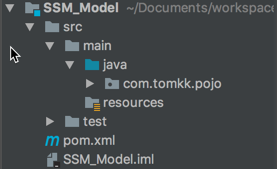

环境 IDE：Intellij IDEA 2017.3
Java：1.8
创建工程 目录结构 工程为多模块结构，采用maven组织依赖关系：
目录结构解释
SSM：用于存放Controller文件和springboot启动类
SSM_Base：用于集中管理所有依赖的父模块
SSM_DAO：用于存放Mapper接口和sql映射文件，以及逆向工程的配置文件
SSM_Model：用于存放实体类

SSM_Service：用于存放Service接口和Service实现类
SSM_Util：用于存放一些工具类
项目依赖结构
以SSM_DAO为例展示创建过程
配置 pom文件配置
SSM模块的pom文件
1 2 3 4 5 6 7 8 9 10 11 12 13 14 15 16 17 18 19 20 21 22 23 <?xml version="1.0" encoding="UTF-8"?> <project xmlns ="http://maven.apache.org/POM/4.0.0" xmlns:xsi ="http://www.w3.org/2001/XMLSchema-instance" xsi:schemaLocation ="http://maven.apache.org/POM/4.0.0 http://maven.apache.org/xsd/maven-4.0.0.xsd" > <parent > <artifactId > SSM_Base</artifactId > <groupId > com.tomkk.learnssm</groupId > <version > 1.0-SNAPSHOT</version > <relativePath > ../SSM_Base/pom.xml</relativePath > </parent > <modelVersion > 4.0.0</modelVersion > <artifactId > SSM</artifactId > <dependencies > <dependency > <groupId > com.tomkk.learnssm</groupId > <artifactId > SSM_Service</artifactId > <version > 1.0-SNAPSHOT</version > </dependency > </dependencies > </project >
SSM_Base的pom文件
1 2 3 4 5 6 7 8 9 10 11 12 13 14 15 16 17 18 19 20 21 22 23 24 25 26 27 28 29 30 31 32 33 34 35 36 37 38 39 40 41 42 43 44 45 46 47 48 49 50 51 52 53 54 55 56 57 58 59 60 61 62 63 64 65 66 67 68 69 70 71 72 73 74 75 76 77 78 79 80 81 82 83 84 85 86 87 88 89 90 91 92 93 94 95 96 97 98 99 100 101 102 103 104 <?xml version="1.0" encoding="UTF-8"?> <project xmlns ="http://maven.apache.org/POM/4.0.0" xmlns:xsi ="http://www.w3.org/2001/XMLSchema-instance" xsi:schemaLocation ="http://maven.apache.org/POM/4.0.0 http://maven.apache.org/xsd/maven-4.0.0.xsd" > <parent > <groupId > org.springframework.boot</groupId > <artifactId > spring-boot-starter-parent</artifactId > <version > 1.5.9.RELEASE</version > </parent > <modules > <module > ../SSM</module > <module > ../SSM_DAO</module > <module > ../SSM_Model</module > <module > ../SSM_Service</module > <module > ../SSM_Util</module > </modules > <modelVersion > 4.0.0</modelVersion > <groupId > com.tomkk.learnssm</groupId > <artifactId > SSM_Base</artifactId > <version > 1.0-SNAPSHOT</version > <packaging > pom</packaging > <properties > <project.build.sourceEncoding > UTF-8</project.build.sourceEncoding > <mybatis-spring-boot-starter.version > 1.3.0</mybatis-spring-boot-starter.version > <mysql-connector-java.version > 5.1.38</mysql-connector-java.version > <junit.version > 4.12</junit.version > <dao.target.dir > src/main/java</dao.target.dir > </properties > <dependencies > <dependency > <groupId > org.springframework.boot</groupId > <artifactId > spring-boot-starter-web</artifactId > </dependency > <dependency > <groupId > org.mybatis.spring.boot</groupId > <artifactId > mybatis-spring-boot-starter</artifactId > <version > ${mybatis-spring-boot-starter.version}</version > </dependency > <dependency > <groupId > org.springframework.boot</groupId > <artifactId > spring-boot-devtools</artifactId > <optional > true</optional > </dependency > <dependency > <groupId > org.springframework.boot</groupId > <artifactId > spring-boot-starter-tomcat</artifactId > </dependency > <dependency > <groupId > mysql</groupId > <artifactId > mysql-connector-java</artifactId > <version > ${mysql-connector-java.version}</version > </dependency > <dependency > <groupId > junit</groupId > <artifactId > junit</artifactId > <version > ${junit.version}</version > </dependency > </dependencies > <build > <plugins > <plugin > <groupId > org.mybatis.generator</groupId > <artifactId > mybatis-generator-maven-plugin</artifactId > <version > 1.3.5</version > <dependencies > <dependency > <groupId > mysql</groupId > <artifactId > mysql-connector-java</artifactId > <version > ${mysql-connector-java.version}</version > </dependency > </dependencies > </plugin > <plugin > <groupId > org.springframework.boot</groupId > <artifactId > spring-boot-maven-plugin</artifactId > <configuration > <mainClass > com.tomkk.ApplicationMain</mainClass > <layout > ZIP</layout > </configuration > </plugin > </plugins > </build > </project >
SSM_DAO的pom文件
1 2 3 4 5 6 7 8 9 10 11 12 13 14 15 16 17 18 19 20 21 22 23 24 25 26 27 28 29 30 31 32 33 34 35 <?xml version="1.0" encoding="UTF-8"?> <project xmlns ="http://maven.apache.org/POM/4.0.0" xmlns:xsi ="http://www.w3.org/2001/XMLSchema-instance" xsi:schemaLocation ="http://maven.apache.org/POM/4.0.0 http://maven.apache.org/xsd/maven-4.0.0.xsd" > <parent > <artifactId > SSM_Base</artifactId > <groupId > com.tomkk.learnssm</groupId > <version > 1.0-SNAPSHOT</version > <relativePath > ../SSM_Base/pom.xml</relativePath > </parent > <modelVersion > 4.0.0</modelVersion > <artifactId > SSM_DAO</artifactId > <dependencies > <dependency > <groupId > com.tomkk.learnssm</groupId > <artifactId > SSM_Model</artifactId > <version > 1.0-SNAPSHOT</version > </dependency > </dependencies > <build > <resources > <resource > <directory > src/main/java</directory > <includes > <include > **/*.xml</include > </includes > <filtering > false</filtering > </resource > </resources > </build > </project >
SSM_Model的pom文件
1 2 3 4 5 6 7 8 9 10 11 12 13 14 15 16 <?xml version="1.0" encoding="UTF-8"?> <project xmlns ="http://maven.apache.org/POM/4.0.0" xmlns:xsi ="http://www.w3.org/2001/XMLSchema-instance" xsi:schemaLocation ="http://maven.apache.org/POM/4.0.0 http://maven.apache.org/xsd/maven-4.0.0.xsd" > <parent > <artifactId > SSM_Base</artifactId > <groupId > com.tomkk.learnssm</groupId > <version > 1.0-SNAPSHOT</version > <relativePath > ../SSM_Base/pom.xml</relativePath > </parent > <modelVersion > 4.0.0</modelVersion > <artifactId > SSM_Model</artifactId > </project >
SSM_Service的pom文件
1 2 3 4 5 6 7 8 9 10 11 12 13 14 15 16 17 18 19 20 21 22 23 24 25 26 27 28 <?xml version="1.0" encoding="UTF-8"?> <project xmlns ="http://maven.apache.org/POM/4.0.0" xmlns:xsi ="http://www.w3.org/2001/XMLSchema-instance" xsi:schemaLocation ="http://maven.apache.org/POM/4.0.0 http://maven.apache.org/xsd/maven-4.0.0.xsd" > <parent > <artifactId > SSM_Base</artifactId > <groupId > com.tomkk.learnssm</groupId > <version > 1.0-SNAPSHOT</version > <relativePath > ../SSM_Base/pom.xml</relativePath > </parent > <modelVersion > 4.0.0</modelVersion > <artifactId > SSM_Service</artifactId > <dependencies > <dependency > <groupId > com.tomkk.learnssm</groupId > <artifactId > SSM_DAO</artifactId > <version > 1.0-SNAPSHOT</version > </dependency > <dependency > <groupId > com.tomkk.learnssm</groupId > <artifactId > SSM_Util</artifactId > <version > 1.0-SNAPSHOT</version > </dependency > </dependencies > </project >
SSM_Util的pom文件
1 2 3 4 5 6 7 8 9 10 11 12 13 14 15 16 <?xml version="1.0" encoding="UTF-8"?> <project xmlns ="http://maven.apache.org/POM/4.0.0" xmlns:xsi ="http://www.w3.org/2001/XMLSchema-instance" xsi:schemaLocation ="http://maven.apache.org/POM/4.0.0 http://maven.apache.org/xsd/maven-4.0.0.xsd" > <parent > <artifactId > SSM_Base</artifactId > <groupId > com.tomkk.learnssm</groupId > <version > 1.0-SNAPSHOT</version > <relativePath > ../SSM_Base/pom.xml</relativePath > </parent > <modelVersion > 4.0.0</modelVersion > <artifactId > SSM_Util</artifactId > </project >
逆向工程配置
pom插件添加【官方参考文档 】
1 2 3 4 5 6 7 8 9 10 11 12 13 14 <plugin > <groupId > org.mybatis.generator</groupId > <artifactId > mybatis-generator-maven-plugin</artifactId > <version > 1.3.5</version > <dependencies > <dependency > <groupId > mysql</groupId > <artifactId > mysql-connector-java</artifactId > <version > ${mysql-connector-java.version}</version > </dependency > </dependencies > </plugin >
generatorConfig.xml 【官方参考文档 】
1 2 3 4 5 6 7 8 9 10 11 12 13 14 15 16 17 18 19 20 21 22 23 24 25 26 27 28 29 30 31 32 33 34 35 36 37 38 39 <?xml version="1.0" encoding="UTF-8"?> <!DOCTYPE generatorConfiguration PUBLIC "-//mybatis.org//DTD MyBatis Generator Configuration 1.0//EN" "http://mybatis.org/dtd/mybatis-generator-config_1_0.dtd"> <generatorConfiguration > <context id ="MysqlTables" targetRuntime ="MyBatis3" > <jdbcConnection driverClass ="com.mysql.jdbc.Driver" connectionURL ="jdbc:mysql://localhost:3306/learn_ssm" userId ="root" password ="root" > </jdbcConnection > <javaTypeResolver > <property name ="forceBigDecimals" value ="false" /> </javaTypeResolver > <javaModelGenerator targetPackage ="com.tomkk.pojo" targetProject ="../SSM_Model/src/main/java" > <property name ="enableSubPackages" value ="true" /> <property name ="trimStrings" value ="true" /> </javaModelGenerator > <sqlMapGenerator targetPackage ="com.tomkk.mapper" targetProject ="../SSM_DAO/src/main/java" > <property name ="enableSubPackages" value ="true" /> </sqlMapGenerator > <javaClientGenerator type ="XMLMAPPER" targetPackage ="com.tomkk.dao.mapper" targetProject ="../SSM_DAO/src/main/java" > <property name ="enableSubPackages" value ="true" /> </javaClientGenerator > <table tableName ="user" > </table > </context > </generatorConfiguration >
application.properties配置 【application.properties官方文档参考 】
1 2 3 4 5 6 7 8 9 10 11 12 13 14 15 16 17 #应用名称 #请在启动程序是动态设置该参数 spring.application.name=ssm #服务器对外端口 #请在启动程序是动态设置该参数 server.port=8080 server.context-path=/ssm server.session.tracking-modes=cookie spring.datasource.url = jdbc:mysql://localhost:3306/learn_ssm spring.datasource.username= root spring.datasource.password= root spring.datasource.driver-class-name=com.mysql.jdbc.Driver # Mybatis 配置 mybatis.typeAliasesPackage=com.tomkk.pojo #sql映射文件扫描 mybatis.mapperLocations=classpath:com.tomkk.dao.mapper/*.xml
log4j.properties【log4j.properties参考】
1 2 3 4 5 log4j.rootLogger=DEBUG,Console log4j.appender.Console=org.apache.log4j.ConsoleAppender log4j.appender.Console.Target=System.out log4j.appender.Console.layout=org.apache.log4j.PatternLayout log4j.appender.Console.layout.ConversionPattern=[%p][%t][%d{yyyy-MM-dd HH\:mm\:ss}][%C] - %m%n
ApplicationMain.java
1 2 3 4 5 6 7 8 9 10 11 12 13 14 15 16 17 18 19 import org.mybatis.spring.annotation.MapperScan;import org.springframework.boot.SpringApplication;import org.springframework.boot.autoconfigure.SpringBootApplication;import org.springframework.context.annotation.ComponentScan;import org.springframework.transaction.annotation.EnableTransactionManagement;@ComponentScan ("com.tomkk" )@MapperScan ("com.tomkk.dao.mapper" )@SpringBootApplication @EnableTransactionManagement public class ApplicationMain public static void main (String[] args) throws Exception SpringApplication springApplication = new SpringApplication( ApplicationMain.class); springApplication.run(args); } }
遇到的问题
generatorConfig.xml中targetProject的路径是以SSM_DAO的根路径为标准
在编译的时候找不到SSM_DAO模块 ，通过修改其pom文件的<packaging>pom</packaging>为<packaging>jar</packaging>解决
启动的时候，报错java.lang.IllegalArgumentException: At least one base package must be specified ，因为mapper接口和mapper.xml没有对应，需要检查classpath下文件是否都被加载。通过指定@MapperScan (“com.neo.mapper”)解决
Cannot determine embedded database driver class for database type NONE 因为applicartion.properties里面关于数据库的配置关键字写错了
运行时报错org.apache.ibatis.binding.BindingException: Invalid bound statement (not found) ，因为把xml文件放到了source folder中，默认不会被加载到classes文件夹中，通过在pom中配置以下解决
1 2 3 4 5 6 7 8 9 10 11 12 <build > <resources > <resource > <directory > src/main/java</directory > <includes > <include > **/*.xml</include > </includes > <filtering > false</filtering > </resource > </resources > </build >
无法通过main函数来启动spring boot但是可以通过maven插件启动spring-boot:run。 通过将spring-boot-starter-tomcat的<scope>provided</scope>注释解决
Intellij idea spring boot热部署
加入依赖spring-boot-devtools
通过main函数来启动
修改完文件以后build一下（可以设置自动build）